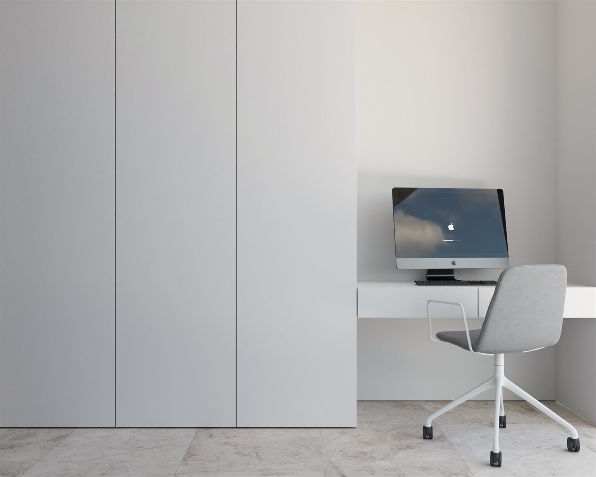

Madbit Living.
Ecosistema visual para un proyecto híbrido de flex living y campus empresarial en el distrito de innovación Madbit de Madrid. Imagen fotorrealista de zonas comunes, piscina en azotea, espacios de concentración y piezas dinámicas para redes.
Vender comunidad y estilo de vida activo.
En los modelos de Flex Living y BTR, el valor percibido depende radicalmente de las zonas comunes. El cliente no busca solo una estancia individual, sino un ecosistema donde conviven el teletrabajo, el deporte, el descanso y el networking.
Diseñamos una dirección visual que enfatiza la luz natural matinal en la piscina de cubierta, la serenidad biomórfica de la sala de yoga y la vivacidad de los patios interiores mediante vídeo cinemático.

Movimiento para redes y captación.
Desarrollamos piezas en ratio vertical 9:16 específicamente pensadas para campañas de Meta Ads y presentaciones dinámicas para inversores y operadores.
Toma cinematográfica · Patio Central

Interiores pensados para respirar.
Revestimientos de madera clara, vegetación interior y cortinas tamizadoras para representar los espacios de trabajo y concentración. Este tipo de imágenes resulta determinante para posicionar la promoción en el segmento de operadores de flex living premium.
Servicios integrados en Madbit
Visualización fotorrealista de zonas comunes y solarium
Vídeo cinemático vertical 9:16 para redes y presentación
Espacios de concentración, salas polivalentes y accesos
Material de soporte visual para inversores y operadores
¿Proyectas un Flex Living o BTR?
Te ayudamos a estructurar la identidad, los renders de zonas comunes y las piezas de vídeo que demandan los operadores y comercializadores.
HABLEMOS DEL PROYECTO →